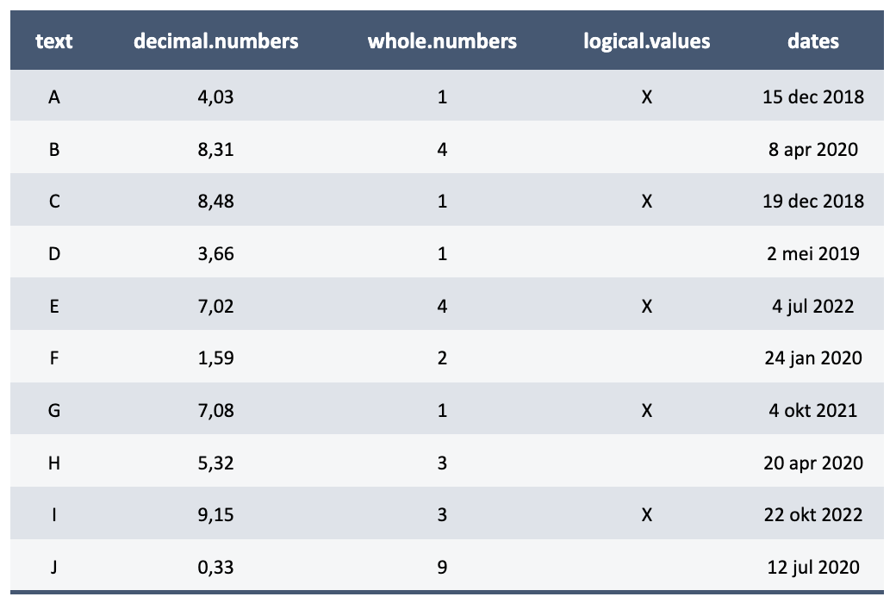
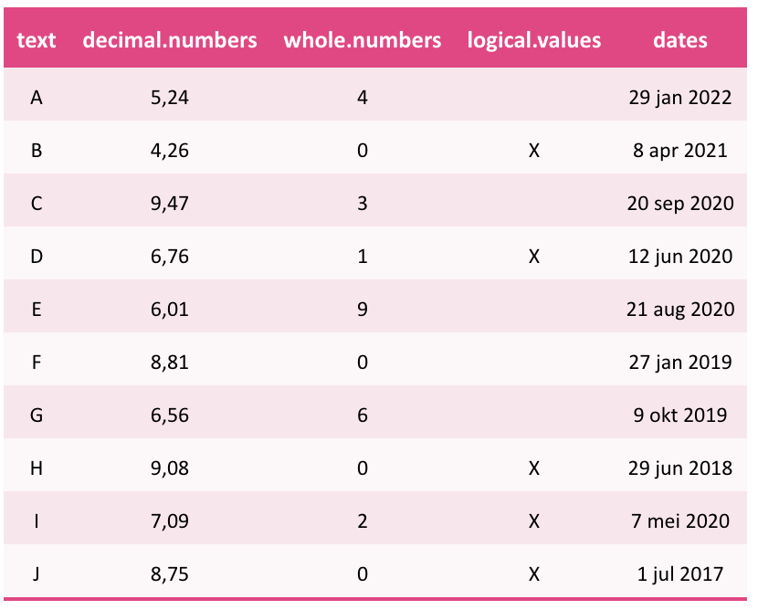
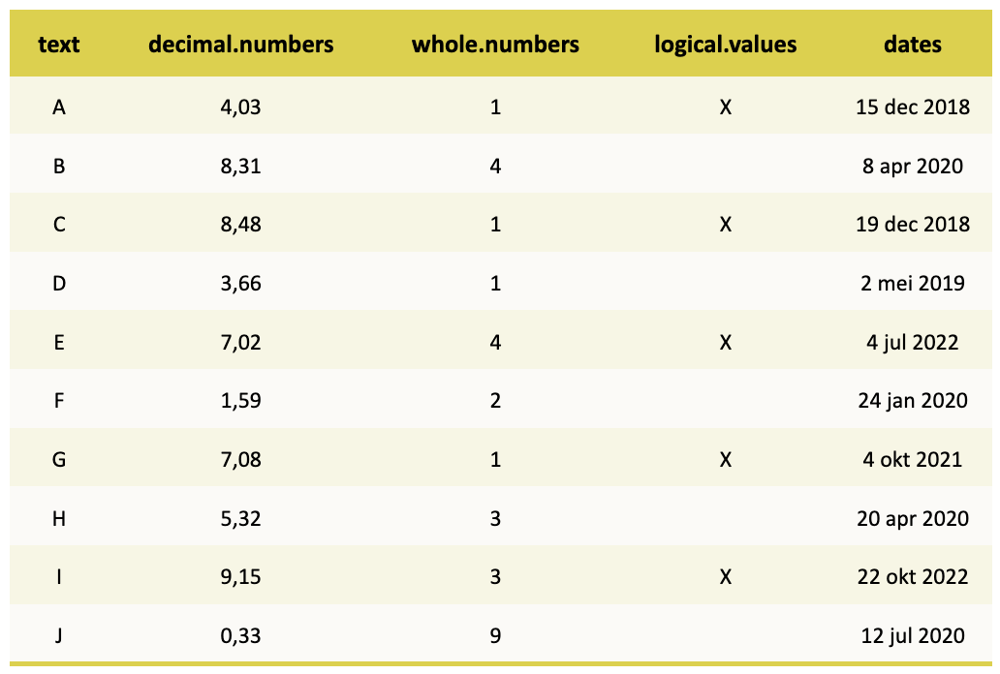
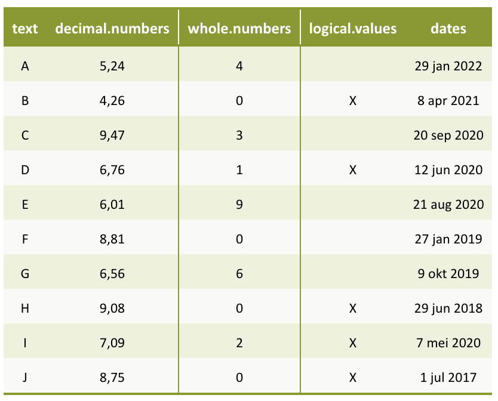
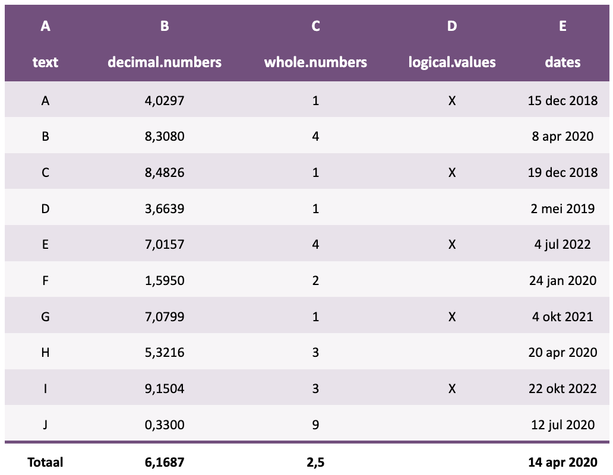

Format a data.frame as flextable::flextable() with Certe style, bold headers and Dutch number formats. This function can also transform existing flextable and gtsummary objects to allow the formatting provided in this tbl_flextable() function.
tbl_flextable(
x,
row.names = rownames(x),
row.names.bold = TRUE,
rows.italic = NULL,
rows.bold = NULL,
rows.height = NULL,
rows.fill = NULL,
rows.zebra = TRUE,
row.total = FALSE,
row.total.name = "Totaal",
row.total.function = sum,
row.total.widths = NULL,
row.total.bold = TRUE,
row.extra.header = list(values = NULL, widths = 1),
row.extra.footer = list(values = NULL, widths = 1),
column.names = colnames(x),
column.names.bold = TRUE,
columns.width = NULL,
columns.percent = NULL,
columns.italic = NULL,
columns.bold = NULL,
columns.fill = NULL,
columns.zebra = FALSE,
column.total = FALSE,
column.total.name = "Totaal",
column.total.function = sum,
column.total.bold = TRUE,
align = "c",
align.part = "all",
caption = "",
na = "",
logicals = c("X", ""),
round.numbers = 2,
round.percent = 1,
format.dates = "d mmm yyyy",
decimal.mark = dec_mark(),
big.mark = big_mark(),
font.family = "Source Sans Pro",
font.size = 9,
font.size.header = font.size + 1,
values.colour = NULL,
values.fill = NULL,
values.bold = NULL,
values.italic = NULL,
autofit = is.null(columns.width) & is.null(rows.height),
autofit.fullpage = TRUE,
autofit.fullpage.width = 16,
vline = NULL,
vline.part = c("body", "footer"),
theme = current_markdown_colour(),
colours = list(rows.fill.even = paste0(theme, "6"), rows.fill.odd = paste0(theme, "5"),
columns.fill = paste0(theme, "5"), values.fill = paste0(theme, "3"), values.colour =
theme, vline.colour = theme, hline.colour = theme, header.fill = theme, header.colour
= "white", vline.header.colour = "white"),
split.across.pages = NROW(x) > 37,
print = !interactive(),
...
)
# S3 method for class 'certetoolbox_flextable'
print(x, use_knitr = !is_latex_output(), ...)a data.frame or a flextable object or a gtsummary object
row names to be displayed. Will be 1:nrow(x) if set to TRUE, but can be a vector of values.
display row names in bold
column indexes of rows in italics
column indexes of rows in bold
height of the rows in centimetres
the column indices of rows to be shaded
banded rows in the body - equivalent to rows.fill = seq(2, nrow(x), 2)
add a row total (at the bottom of the table)
name of the row total
function used to calculate all numeric values per column (non-numeric columns are skipped)
cell width in row total
bold formatting of row total
an extra header to be displayed above the table
an extra footer to show below the table
column names to be displayed. Can also be a named vector where the names are existing columns, or indices of columns. When this vector is smaller than ncol(x), only the first length(column.names) are replaced. When this vector is longer than ncol(x), all column names are replaced
display column names in bold
width of columns. For autofit.fullpage = TRUE, these are proportions to autofit.fullpage.width. For autofit.fullpage = FALSE, these are centimeters
display the column indices as percentages using format2() - example: columns.percent = c(2, 3)
column indices of columns to be displayed in italics
column indices of columns in bold
the column indices of rows to be shaded
banded columns - equivalent to columns.fill = seq(2, ncol(x), 2)
adding a column total (to the right of the table)
name of the column total
function used to calculate all numeric values per row
bold formatting of column total
default is "c", which aligns everything centrally. Use "r", "l", "c" and "j"/"u" (justify/align) to change alignment. Can be a vector or a character (like "lrrrcc")
part of the table where the alignment should take place ("all", "header", "body", "footer")
table caption
text for missing values
vector with two values that replace TRUE and FALSE
number of decimal places to round up for numbers
number of decimal places to round to when using columns.percent
see format2()
decimal separator, defaults to dec_mark()
thousands separator, defaults to big_mark()
table font family
table font size
font size of header
values to be formatted
format table in width automatically. This will apply autofit().
display table across width of page
set number of centimetres to width of table
indices of columns to have a vertical line to their right
part of the table where the vertical lines should be placed ("all", "header", "body", "footer")
a Certe colour theme, defaults to current_markdown_colour() which determines the Certe colour based on a markdown YAML header and defaults to "certeblauw". Can also be "certeroze", "certegroen", etc. This will set the list in colours and will be ignored if colours is set manually. Can be set to "white" for a clean look.
a list with the following named character values: rows.fill.even, rows.fill.odd, columns.fill, values.fill, and values.colour. All values will be evaluated with colourpicker().
a logical whether tables are allowed to split across page. This argument only has effect for PDF output.
forced printing (required in a for loop), default is TRUE in non-interactive sessions
not used
use the knitr package for printing. Ignored when in an interactive session. If FALSE, an internal certetoolbox function will be used to convert the LaTeX longtable that would print across multiple PDF pages. If in a non-interactive session where the output is non-LaTeX, the knitr package will always be used.
flextable::flextable object
Run tbl_markdown() on a flextable object to transform it into markdown for use in Quarto or R Markdown reports. If print = TRUE in non-interactive sessions (Quarto or R Markdown), the flextable object will also be printed in markdown.
The value for theme is dependent on whether a colour is set in the markdown YAML header. Otherwise, use theme to set a Certe colour theme, defaults to "certeblauw":
# from the example below
tbl_flextable(df)
tbl_flextable(df, theme = "certeroze")
tbl_flextable(df, theme = "certegeel")
tbl_flextable(df, theme = "certegroen", vline = c(2:3))
tbl_flextable(
df,
theme = "certelila",
row.total = TRUE,
row.total.function = median,
round.numbers = 4,
row.extra.header = list(values = LETTERS[1:5])
)
if (FALSE) { # \dontrun{
# generate a data.frame
df <- data.frame(text = LETTERS[1:10],
`decimal numbers` = runif(10, 0, 10),
`whole numbers` = as.integer(runif(10, 0, 10)),
`logical values` = as.logical(round(runif(10, 0, 1))),
dates = today() - runif(10, 200, 2000),
stringsAsFactors = FALSE)
# default
tbl_flextable(df) # dataset has no row names
tbl_flextable(mtcars) # dataset has row names
# print in markdown
df |>
tbl_flextable() |>
tbl_markdown()
# transform a gtsummary to a flextable
iris |>
tbl_gtsummary(Species, add_p = TRUE) |>
tbl_flextable()
# extra formatting
tbl_flextable(df,
logicals = c("X", "-"), # replaces TRUE en FALSE
values.colour = "X",
values.fill = "X",
row.names = "S. aureus",
columns.italic = 1,
format.dates = "ddd dd-mm-yy",
round.numbers = 3)
# row totals
tbl_flextable(df,
row.total = TRUE, # add row total
row.total.function = max, # instead of sum()
row.total.name = "Maximum", # also works with dates
columns.percent = 2, # 2nd column as percentages
round.percent = 0) # rounding percentages
# column names
tbl_flextable(df,
column.names = c("1" = "Column 1",
"2" = "Column 2",
dates = "DATES!"))
tbl_flextable(df,
column.names = LETTERS)
# vertical lines, alignment and row names
tbl_flextable(df,
align = "lrrcc", # also works: c("l", "r", "r", "c", "c")
font.size = 12,
vline = c(2, 4),
vline.part = "all",
row.names = paste("Experiment", 1:10))
# width of cells and table
tbl_flextable(data.frame(test1 = "A", test2 = "B"),
vline = 1,
autofit.fullpage.width = 16, # default values in cm
columns.width = c(1, 3)) # ratio; cells become 4 and 12 cm
tbl_flextable(data.frame(test1 = "A", test2 = "B"),
vline = 1,
autofit.fullpage = FALSE, # no fullpage autofit
columns.width = c(1, 3)) # cells become 1 and 3 cm
# adding extra header or footer
tbl_flextable(data.frame(test1 = "A", test2 = "B"),
row.extra.header = list(values = c("Header", "Header"),
widths = c(1, 1)),
row.extra.footer = list(values = c("Footer", "Footer"),
widths = c(1, 1)))
} # }